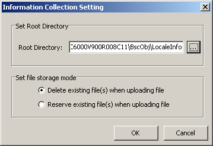

This describes how to set the save path and storage mode of the collected information.
Prerequisite
When the Collect BSC Local Information or Information Collection Report Configuration dialog box is displayed, setting the information collection is unavailable.
Context
By default, the collected information is saved in the following directory: \HW LMT\BSC6000\LMT version number\BscObj\office name\LocaleInfo.
Procedure
- Choose . A dialog box is displayed, as shown in Figure 1.
Figure 1 Information Collection Setting dialog box
- Click to select a directory for saving the collected information.
- In the Set file storage mode area:
- If you select Delete existing file(s) when uploading file, all the previously collected information will be deleted during information collection.
- If you select Reserve existing file(s) when uploading file, all the previously collected information is reserved during information collection. The file will overwrite the existing file with the same name.
- Click OK to complete the setting.
Copyright © Huawei Technologies Co., Ltd.